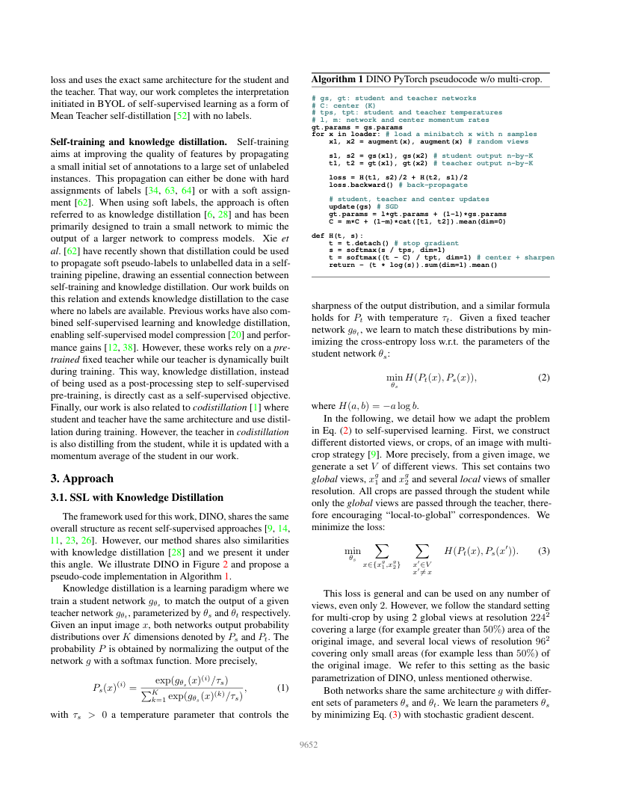
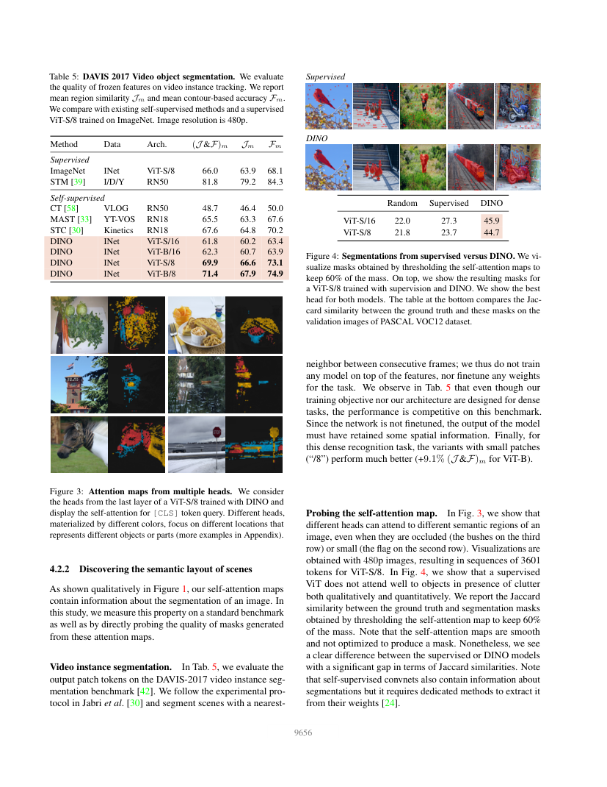

English translation pending — this page shows the Chinese original.
一句话结论
DINO 用跨增强视图的教师—学生自蒸馏学习视觉表示；ViT 得到的全局向量支持近邻分类，patch 特征与注意力也保留可利用的物体空间结构。
论文定位与问题定义
论文类型是自监督视觉表征学习方法与表征性质分析。backbone 是方法所训练的 ViT / ResNet；训练后的编码器可作为分类、检索、分割与跟踪模块的视觉感知骨干。下游头和评测协议决定最终任务输出。
研究问题是：把自监督目标应用于 ViT 后，会出现什么区别于有标签分类预训练的表示性质？论文同时考察训练方法、网络结构与 patch 粒度，不能把所有收益单独归给 Transformer 架构。
方法概述
- 输入与跨视图学习：同一张图像生成两个全局裁剪和多个局部裁剪；学生读取全部视图，教师读取全局视图。局部视图要预测全局教师的输出分布，使局部内容连接到整图语义（主文 §3.1，PDF pp.3–4）。
- 训练信号：投影头把编码器输出映射为原型分布，学生用交叉熵匹配另一视图的教师分布。可写为
L = Σ H(p_teacher(global), p_student(other_view))。原型维度表示训练用的潜在分组，类别命名由下游监督提供。 - 教师更新：学生通过梯度下降学习，教师以学生参数的指数移动平均更新，并停止反向梯度。教师因而提供时间平滑的学习目标。
- 防坍塌：教师输出中心化与低温锐化一起平衡“少数维度独占”与“均匀分布”；稳定性依赖多项机制组合。补充材料进一步检查教师更新、温度、投影头与 batch 设置。
- 迁移接口：训练网络写作
g = h ∘ f，下游使用 backbonef的输出。CLS token 提供整图描述，patch tokens 提供空间特征；注意力图是另一种可视化/对象发现信号（主文 §3.2）。
核心实验与结果
以下均为论文自报，保留原表中的同协议对照。
| 协议与定位 | 方法 | 结果 ↑ | 能支持的判断 |
|---|---|---|---|
| ImageNet 冻结特征，主文 Table 2 / PDF p.5 | DINO ViT-S/16 | linear top-1 77.0%；k-NN 74.5% | 近邻规则即可读出较强类别结构 |
| 同表、同结构 | SwAV ViT-S | linear 73.5%；k-NN 66.3% | 自监督目标的选择影响可读出的结构 |
| DAVIS 2017，480p，Table 5 / PDF p.7 | ImageNet 有标签预训练 ViT-S/8 | J&F 66.0 | 同结构预训练对照 |
| 同一传播协议 | DINO ViT-S/8 | J&F 69.9 | 自监督特征能支持时序空间对应 |
| 同表 | DINO ViT-B/16 → ViT-B/8 | J&F 62.3 → 71.4 | 更细 patch 提供更细空间信息，计算也更贵 |
| 同表中的任务专门方法 | STM RN50 | J&F 81.8 | 专门任务训练仍提供强竞争基线 |
DAVIS 实验冻结网络、用特征最近邻传播掩码；协议包含给定首帧目标掩码和真值计分。自监督描述预训练信号，下游评测仍有自己的输入许可。注意力阈值掩码在 VOC12 上的 Jaccard 结果来自 Figure 4，和 DAVIS 的 J&F 应分开解释。
Table 7 的消融把 momentum teacher、multi-crop 与训练目标放在相同 ViT-S/16 设置下比较；补充进一步分析模型、patch、训练时长以及中心化/锐化的作用。训练配方共同决定结果，单个可视化案例只能说明有用结构存在。
关键图示


局限、反证与成本
- 语义类别与对象边界：注意力可形成对象相关区域；具名类别分割仍需要标注、映射或额外模块。部分展示选择效果最好的注意力头，存在可视化选择条件。
- 分辨率成本：小 patch 增加 token 数、注意力计算与显存。应同时报告目标边界质量、延迟、显存和输入分辨率。
- 任务与域：ImageNet 预训练以及有限基准上的可迁移性，为更广领域实验提供起点；多视图几何一致性、遮挡下的对应和三维类别分割需要独立测试。
- 因果范围：CNN 与 ViT 的对比同时涉及结构和特征读出；更大模型、更细 patch、更多训练步的收益应分别对齐预算。
对当前 wiki 判断的影响
为 Visual Representations and Backbones 补上“架构—学习目标—预训练权重”的三个层次。与 DINOv2、DINOv3 连读，可以追踪从表征性质发现到大规模通用特征及密集特征稳定化的演化。
把 DINO 特征用于三维高斯语义分割属于后续研究设计，实验问题列在 DINO 密集特征如何迁移到三维高斯语义分割？。
原始链接与本地证据
- 本地全文：
raw/ingest/2026-09-27-dino/paper.pdf；完整文本、逐页阅读范围与 SHA-256 见同目录read-manifest.json。 - 家族关系：DINO 家族：自监督视觉表示与预训练骨干；正式版本核验边界见本文开头。